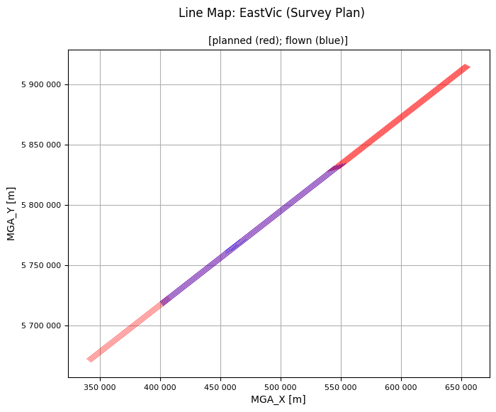
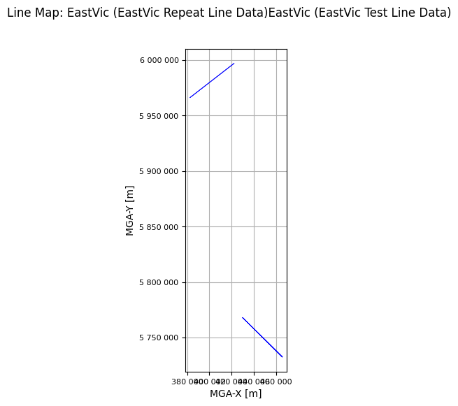
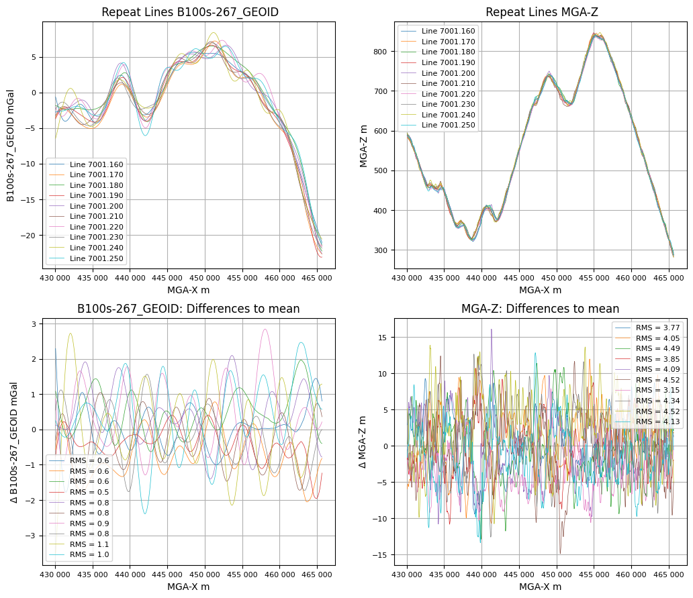

Repeat Line Analysis¶
For gravimeter surveys it is common to set a requirement on the gravity data repeatability.
galileoQC provides the checkRepeatLines function for repeat-line analysis.
Here we demonstrate its use on the East Victorian airborne gravimetry survey data.
Ensure you have run the Prepare_EastVicData notebook first so that the data are prepared for review.
Import the required modules, and set the path to the geowhizz files.
from pathlib import Path
import galileoQC as qc
dh = Path(r'./EastVicData/EastVicRepeats.hdf5')
if not dh.exists():
%run ./Prepare_EastVicData.ipynb
Accessing XYZ data in EastVicData/EastVicPlan.xyz.
First few records are:
/Clearance_m Drape_m Line Terrain_m W84_Latitude_deg
W84_Longitude_deg W84_UTM_55S_X_m W84_UTM_55S_Y_m
//Flight 0
//Date 2022/03/11
Line 2340
Found 41 header records
Found 20 lines
Found 8 fields
Channel precisions (number of decimal places):
[2 2 2 2 8 8 2 2]
Creating: EastVicData/EastVicPlan.hdf5
Setting BlockID = Survey Plan for EastVicPlan.hdf5.
Setting Acquirer = Sander Geophysics for EastVicPlan.hdf5.
Changed CoordFrame attribute(s) for EastVicPlan.hdf5.
Changed channel attribute(s) for W84_UTM_55S_X_m in EastVicPlan.hdf5.
Changed channel attribute(s) for W84_UTM_55S_Y_m in EastVicPlan.hdf5.
Changed channel attribute(s) for Drape_m in EastVicPlan.hdf5.
Changed channel attribute(s) for Clearance_m in EastVicPlan.hdf5.
Changed channel attribute(s) for Terrain_m in EastVicPlan.hdf5.
Changed channel attribute(s) for W84_Latitude_deg in EastVicPlan.hdf5.
Changed channel attribute(s) for W84_Longitude_deg in EastVicPlan.hdf5.
Whizz Version 1.0
Acquirer: Sander Geophysics
BlockID: Survey Plan
ProjectName: EastVic
Coordinates
AltitudeChannel: Drape_m
GeoDatum: WGS84
Projection: UTM
UTMZone: 55
XChannel: W84_UTM_55S_X_m
YChannel: W84_UTM_55S_Y_m
20 lines: total distance flown [km] = 2,770.8
20 lines:
['2340.000', '2341.000', '2341.100', '2341.500', '2342.000',
'2343.000', '2343.100', '2343.500', '2344.000', '2345.000',
'2345.100', '2345.500', '2346.000', '2347.000', '2347.100',
'2347.500', '2348.000', '2349.000', '2349.100', '2349.500']
8 channels:
['Clearance_m', 'Drape_m', 'Line', 'Terrain_m', 'W84_Latitude_deg',
'W84_Longitude_deg', 'W84_UTM_55S_X_m', 'W84_UTM_55S_Y_m']
Accessing XYZ data in EastVicData/EastVic.xyz.
First few records are:
/ ATMCOR B100s_267_GEOID B100s_267_GRS80 B56s_267_GEOID
B56s_267_GRS80 DEM DOY EOTCOR FA100s_GEOID FA100s_GRS80
FA56s_GEOID FA56s_GRS80 FACOR_GEOID FACOR_GRS80 FLIGHT FTIME
FX FY FZ HDOP LALT LAT LATCOR
LINE LONG MGA_X MGA_Y MGA_Z MSL_Z NSATS
PDOP RALT STATCOR TACOR V_EAST V_NORTH VDOP
YEAR
//Flight 0
//Date 2022/07/13
Line 2341.50
Found 17 header records
Found 8 lines
Found 38 fields
Channel precisions (number of decimal places):
[2 2 2 2 2 2 2 2 2 2 2 2 2 2 2 2 2 2 2 2 2 8 2 2 8 2 2 2 2 2 2 2 2 2 2
2 2 2]
Creating: EastVicData/EastVic.hdf5
Setting BlockID = EastVic Field Data for EastVic.hdf5.
Setting Acquirer = Sander Geophysics for EastVic.hdf5.
Changed CoordFrame attribute(s) for EastVic.hdf5.
Setting Line attributes for EastVicData/EastVic.hdf5 to include flight numbers from FLIGHT.
Setting Line attributes for EastVicData/EastVic.hdf5 to include date values from DOY.
Setting Line attributes for EastVic.hdf5 according to the SGL_GA scheme.
Verifying planned line numbers against provided plan file(s).
Changed channel attribute(s) for FTIME in EastVic.hdf5.
Changed channel attribute(s) for MGA_X in EastVic.hdf5.
Changed channel attribute(s) for MGA_Y in EastVic.hdf5.
Changed channel attribute(s) for MGA_Z in EastVic.hdf5.
Changed channel attribute(s) for MSL_Z in EastVic.hdf5.
Changed channel attribute(s) for LAT in EastVic.hdf5.
Changed channel attribute(s) for LONG in EastVic.hdf5.
Changed channel attribute(s) for DEM in EastVic.hdf5.
Changed channel attribute(s) for RALT in EastVic.hdf5.
Changed channel attribute(s) for LALT in EastVic.hdf5.
Changed channel attribute(s) for FX in EastVic.hdf5.
Changed channel attribute(s) for FY in EastVic.hdf5.
Changed channel attribute(s) for FZ in EastVic.hdf5.
Changed channel attribute(s) for V_EAST in EastVic.hdf5.
Changed channel attribute(s) for V_NORTH in EastVic.hdf5.
Changed channel attribute(s) for EOTCOR in EastVic.hdf5.
Changed channel attribute(s) for LATCOR in EastVic.hdf5.
Changed channel attribute(s) for STATCOR in EastVic.hdf5.
Changed channel attribute(s) for ATMCOR in EastVic.hdf5.
Changed channel attribute(s) for FACOR_GRS80 in EastVic.hdf5.
Changed channel attribute(s) for FACOR_GEOID in EastVic.hdf5.
Changed channel attribute(s) for TACOR in EastVic.hdf5.
Changed channel attribute(s) for FA56s_GRS80 in EastVic.hdf5.
Changed channel attribute(s) for FA56s_GEOID in EastVic.hdf5.
Changed channel attribute(s) for FA100s_GRS80 in EastVic.hdf5.
Changed channel attribute(s) for FA100s_GEOID in EastVic.hdf5.
Changed channel attribute(s) for B56s_267_GRS80 in EastVic.hdf5.
Changed channel attribute(s) for B56s_267_GEOID in EastVic.hdf5.
Changed channel attribute(s) for B100s_267_GRS80 in EastVic.hdf5.
Changed channel attribute(s) for B100s_267_GEOID in EastVic.hdf5.
Whizz Version 1.0
Acquirer: Sander Geophysics
BlockID: EastVic Field Data
ProjectName: EastVic
Coordinates
AltitudeChannel: MGA_Z
GeoDatum: GDA2020
HeightDatum: GRS80
LatitudeChannel: LAT
LongitudeChannel: LONG
Projection: MGA
TimeChannel: FTIME
UTMZone: 55
XChannel: MGA_X
YChannel: MGA_Y
8 lines: total distance flown [km] = 981.3
8 lines:
['2341.500', '2343.500', '2343.510', '2345.500', '2345.510',
'2347.500', '2349.500', '2349.510']
38 channels:
['ATMCOR', 'B100s_267_GEOID', 'B100s_267_GRS80', 'B56s_267_GEOID',
'B56s_267_GRS80', 'DEM', 'DOY', 'EOTCOR', 'FA100s_GEOID',
'FA100s_GRS80', 'FA56s_GEOID', 'FA56s_GRS80', 'FACOR_GEOID',
'FACOR_GRS80', 'FLIGHT', 'FTIME', 'FX', 'FY', 'FZ', 'HDOP', 'LALT',
'LAT', 'LATCOR', 'LINE', 'LONG', 'MGA_X', 'MGA_Y', 'MGA_Z', 'MSL_Z',
'NSATS', 'PDOP', 'RALT', 'STATCOR', 'TACOR', 'VDOP', 'V_EAST',
'V_NORTH', 'YEAR']
Whizz Version 1.0
Acquirer: Sander Geophysics
BlockID: EastVic Field Data
ProjectName: EastVic
Coordinates
AltitudeChannel: MGA_Z
GeoDatum: GDA2020
HeightDatum: GRS80
LatitudeChannel: LAT
LongitudeChannel: LONG
Projection: MGA
TimeChannel: FTIME
UTMZone: 55
XChannel: MGA_X
YChannel: MGA_Y
Line <HDF5 group "/Whizz Version 1.0/Lines/2341.500" (38 members)>
1 lines: total distance flown [km] = 192.3
Date: 106.0
Flight: 1012.0
LineNumber: 2341.5
LineType: SGL_GA
LineVariety: Traverse
PlannedLine: 2341.5
ReflightNumber: 0
Segment: 5
['2341.500', '2343.500', '2343.510', '2345.500', '2345.510',
'2347.500', '2349.500', '2349.510']
38 channels:
['ATMCOR', 'B100s_267_GEOID', 'B100s_267_GRS80', 'B56s_267_GEOID',
'B56s_267_GRS80', 'DEM', 'DOY', 'EOTCOR', 'FA100s_GEOID',
'FA100s_GRS80', 'FA56s_GEOID', 'FA56s_GRS80', 'FACOR_GEOID',
'FACOR_GRS80', 'FLIGHT', 'FTIME', 'FX', 'FY', 'FZ', 'HDOP', 'LALT',
'LAT', 'LATCOR', 'LINE', 'LONG', 'MGA_X', 'MGA_Y', 'MGA_Z', 'MSL_Z',
'NSATS', 'PDOP', 'RALT', 'STATCOR', 'TACOR', 'VDOP', 'V_EAST',
'V_NORTH', 'YEAR']
Channel <HDF5 dataset "ATMCOR": shape (6449,), type "<f8">
Name: ATMCOR
Units: mGal
Whizz Version 1.0
Acquirer: Sander Geophysics
BlockID: EastVic Field Data
ProjectName: EastVic
5 flights including 8 lines.
Flights
1012
L2341.500
1014
L2343.500
1018
L2343.510 L2345.500 L2345.510 L2347.500
1021
L2349.500
1022
L2349.510
Whizz Version 1.0
Acquirer: Sander Geophysics
BlockID: EastVic Field Data
ProjectName: EastVic
Sample time and distance statistics
Min = 0.500 s, 26.2 m
Max = 0.500 s, 32.4 m
Mean = 0.500 s, 29.7 m
Stdev = 0 s, 0.9 m
Whizz Version 1.0
38 channels:
38 channels:
['ATMCOR', 'B100s_267_GEOID', 'B100s_267_GRS80', 'B56s_267_GEOID',
'B56s_267_GRS80', 'DEM', 'DOY', 'EOTCOR', 'FA100s_GEOID',
'FA100s_GRS80', 'FA56s_GEOID', 'FA56s_GRS80', 'FACOR_GEOID',
'FACOR_GRS80', 'FLIGHT', 'FTIME', 'FX', 'FY', 'FZ', 'HDOP', 'LALT',
'LAT', 'LATCOR', 'LINE', 'LONG', 'MGA_X', 'MGA_Y', 'MGA_Z', 'MSL_Z',
'NSATS', 'PDOP', 'RALT', 'STATCOR', 'TACOR', 'VDOP', 'V_EAST',
'V_NORTH', 'YEAR']
Accessing XYZ data in EastVicData/EastVicTest.xyz.
First few records are:
/
/
/ LINE FLIGHT YEAR DOY FTIME MGA-X MGA-Y
MGA-Z MSL-Z LAT LONG PDOP VDOP HDOP
NSATS DEM RALT LALT FX FY
FZ V_EAST V_NORTH EOTCOR LATCOR STATCOR
ATMCOR FACOR_GRS80 FACOR_GEOID TACOR FA56s_GRS80
FA56s_GEOID FA100s_GRS80 FA100s_GEOID B56s-267_GRS80 B56s-267_GEOID
B100s-267_GRS80 B100s-267_GEOID
Line 8001.04
Found 3 header records
Found 4 lines
Found 38 fields
Channel precisions (number of decimal places):
[2 0 0 0 2 2 2 2 2 7 7 2 2 2 0 2 2 2 3 3 3 3 3 3 3 3 3 3 3 3 3 3 3 3 3
3 3 3]
Creating: EastVicData/EastVicTest.hdf5
Setting BlockID = EastVic Test Line Data for EastVicTest.hdf5.
Setting Acquirer = Sander Geophysics for EastVicTest.hdf5.
Changed CoordFrame attribute(s) for EastVicTest.hdf5.
Setting Line attributes for EastVicData/EastVicTest.hdf5 to include flight numbers from FLIGHT.
Setting Line attributes for EastVicData/EastVicTest.hdf5 to include date values from DOY.
Setting Line attributes for EastVicTest.hdf5 according to the SGL_GA scheme.
Verifying planned line numbers against provided plan file(s).
Changed channel attribute(s) for FTIME in EastVicTest.hdf5.
Changed channel attribute(s) for MGA-X in EastVicTest.hdf5.
Changed channel attribute(s) for MGA-Y in EastVicTest.hdf5.
Changed channel attribute(s) for MGA-Z in EastVicTest.hdf5.
Changed channel attribute(s) for MSL-Z in EastVicTest.hdf5.
Changed channel attribute(s) for LAT in EastVicTest.hdf5.
Changed channel attribute(s) for LONG in EastVicTest.hdf5.
Changed channel attribute(s) for DEM in EastVicTest.hdf5.
Changed channel attribute(s) for RALT in EastVicTest.hdf5.
Changed channel attribute(s) for LALT in EastVicTest.hdf5.
Changed channel attribute(s) for FX in EastVicTest.hdf5.
Changed channel attribute(s) for FY in EastVicTest.hdf5.
Changed channel attribute(s) for FZ in EastVicTest.hdf5.
Changed channel attribute(s) for V_EAST in EastVicTest.hdf5.
Changed channel attribute(s) for V_NORTH in EastVicTest.hdf5.
Changed channel attribute(s) for EOTCOR in EastVicTest.hdf5.
Changed channel attribute(s) for LATCOR in EastVicTest.hdf5.
Changed channel attribute(s) for STATCOR in EastVicTest.hdf5.
Changed channel attribute(s) for ATMCOR in EastVicTest.hdf5.
Changed channel attribute(s) for FACOR_GRS80 in EastVicTest.hdf5.
Changed channel attribute(s) for FACOR_GEOID in EastVicTest.hdf5.
Changed channel attribute(s) for TACOR in EastVicTest.hdf5.
Changed channel attribute(s) for FA56s_GRS80 in EastVicTest.hdf5.
Changed channel attribute(s) for FA56s_GEOID in EastVicTest.hdf5.
Changed channel attribute(s) for FA100s_GRS80 in EastVicTest.hdf5.
Changed channel attribute(s) for FA100s_GEOID in EastVicTest.hdf5.
Changed channel attribute(s) for B56s-267_GRS80 in EastVicTest.hdf5.
Changed channel attribute(s) for B56s-267_GEOID in EastVicTest.hdf5.
Changed channel attribute(s) for B100s-267_GRS80 in EastVicTest.hdf5.
Changed channel attribute(s) for B100s-267_GEOID in EastVicTest.hdf5.
Whizz Version 1.0
Acquirer: Sander Geophysics
BlockID: EastVic Test Line Data
ProjectName: EastVic
Coordinates
AltitudeChannel: MGA-Z
GeoDatum: GDA2020
HeightDatum: GRS80
LatitudeChannel: LAT
LongitudeChannel: LONG
Projection: MGA
TimeChannel: FTIME
UTMZone: 55
XChannel: MGA-X
YChannel: MGA-Y
4 lines: total distance flown [km] = 200.4
4 lines:
['8001.040', '8001.050', '8001.060', '8001.070']
38 channels:
['ATMCOR', 'B100s-267_GEOID', 'B100s-267_GRS80', 'B56s-267_GEOID',
'B56s-267_GRS80', 'DEM', 'DOY', 'EOTCOR', 'FA100s_GEOID',
'FA100s_GRS80', 'FA56s_GEOID', 'FA56s_GRS80', 'FACOR_GEOID',
'FACOR_GRS80', 'FLIGHT', 'FTIME', 'FX', 'FY', 'FZ', 'HDOP', 'LALT',
'LAT', 'LATCOR', 'LINE', 'LONG', 'MGA-X', 'MGA-Y', 'MGA-Z', 'MSL-Z',
'NSATS', 'PDOP', 'RALT', 'STATCOR', 'TACOR', 'VDOP', 'V_EAST',
'V_NORTH', 'YEAR']
Whizz Version 1.0
Acquirer: Sander Geophysics
BlockID: EastVic Test Line Data
ProjectName: EastVic
1 flights including 4 lines.
Flights
2019
Whizz Version 1.0
Acquirer: Sander Geophysics
BlockID: EastVic Test Line Data
ProjectName: EastVic
Sample time and distance statistics
Min = 0.500 s, 27.3 m
Max = 0.500 s, 33.2 m
Mean = 0.500 s, 30.3 m
Stdev = 0 s, 1 m
Accessing XYZ data in EastVicData/EastVicRepeats.xyz.
First few records are:
/
/
/ LINE FLIGHT YEAR DOY FTIME MGA-X MGA-Y
MGA-Z MSL-Z LAT LONG PDOP VDOP HDOP
NSATS DEM RALT LALT FX FY
FZ V_EAST V_NORTH EOTCOR LATCOR STATCOR
ATMCOR FACOR_GRS80 FACOR_GEOID TACOR FA56s_GRS80
FA56s_GEOID FA100s_GRS80 FA100s_GEOID B56s-267_GRS80 B56s-267_GEOID
B100s-267_GRS80 B100s-267_GEOID
Line 7001.16
Found 3 header records
Found 10 lines
Found 38 fields
Channel precisions (number of decimal places):
[2 0 0 0 2 2 2 2 2 7 7 2 2 2 0 2 2 2 3 3 3 3 3 3 3 3 3 3 3 3 3 3 3 3 3
3 3 3]
Creating: EastVicData/EastVicRepeats.hdf5
Setting BlockID = EastVic Repeat Line Data for EastVicRepeats.hdf5.
Setting Acquirer = Sander Geophysics for EastVicRepeats.hdf5.
Changed CoordFrame attribute(s) for EastVicRepeats.hdf5.
Changed CoordFrame attribute(s) for EastVicRepeats.hdf5.
Setting Line attributes for EastVicData/EastVicRepeats.hdf5 to include flight numbers from FLIGHT.
Setting Line attributes for EastVicData/EastVicRepeats.hdf5 to include date values from DOY.
Setting Line attributes for EastVicRepeats.hdf5 according to the SGL_GA scheme.
Verifying planned line numbers against provided plan file(s).
Changed channel attribute(s) for FTIME in EastVicRepeats.hdf5.
Changed channel attribute(s) for MGA-X in EastVicRepeats.hdf5.
Changed channel attribute(s) for MGA-Y in EastVicRepeats.hdf5.
Changed channel attribute(s) for MGA-Z in EastVicRepeats.hdf5.
Changed channel attribute(s) for MSL-Z in EastVicRepeats.hdf5.
Changed channel attribute(s) for LAT in EastVicRepeats.hdf5.
Changed channel attribute(s) for LONG in EastVicRepeats.hdf5.
Changed channel attribute(s) for DEM in EastVicRepeats.hdf5.
Changed channel attribute(s) for RALT in EastVicRepeats.hdf5.
Changed channel attribute(s) for LALT in EastVicRepeats.hdf5.
Changed channel attribute(s) for FX in EastVicRepeats.hdf5.
Changed channel attribute(s) for FY in EastVicRepeats.hdf5.
Changed channel attribute(s) for FZ in EastVicRepeats.hdf5.
Changed channel attribute(s) for V_EAST in EastVicRepeats.hdf5.
Changed channel attribute(s) for V_NORTH in EastVicRepeats.hdf5.
Changed channel attribute(s) for EOTCOR in EastVicRepeats.hdf5.
Changed channel attribute(s) for LATCOR in EastVicRepeats.hdf5.
Changed channel attribute(s) for STATCOR in EastVicRepeats.hdf5.
Changed channel attribute(s) for ATMCOR in EastVicRepeats.hdf5.
Changed channel attribute(s) for FACOR_GRS80 in EastVicRepeats.hdf5.
Changed channel attribute(s) for FACOR_GEOID in EastVicRepeats.hdf5.
Changed channel attribute(s) for TACOR in EastVicRepeats.hdf5.
Changed channel attribute(s) for FA56s_GRS80 in EastVicRepeats.hdf5.
Changed channel attribute(s) for FA56s_GEOID in EastVicRepeats.hdf5.
Changed channel attribute(s) for FA100s_GRS80 in EastVicRepeats.hdf5.
Changed channel attribute(s) for FA100s_GEOID in EastVicRepeats.hdf5.
Changed channel attribute(s) for B56s-267_GRS80 in EastVicRepeats.hdf5.
Changed channel attribute(s) for B56s-267_GEOID in EastVicRepeats.hdf5.
Changed channel attribute(s) for B100s-267_GRS80 in EastVicRepeats.hdf5.
Changed channel attribute(s) for B100s-267_GEOID in EastVicRepeats.hdf5.
Whizz Version 1.0
Acquirer: Sander Geophysics
BlockID: EastVic Repeat Line Data
ProjectName: EastVic
Coordinates
AltitudeChannel: MGA-Z
GeoDatum: GDA2020
HeightDatum: GRS80
LatitudeChannel: LAT
LongitudeChannel: LONG
Projection: MGA
TimeChannel: FTIME
UTMZone: 55
XChannel: MGA-X
YChannel: MGA-Y
10 lines: total distance flown [km] = 501.3
10 lines:
['7001.160', '7001.170', '7001.180', '7001.190', '7001.200',
'7001.210', '7001.220', '7001.230', '7001.240', '7001.250']
38 channels:
['ATMCOR', 'B100s-267_GEOID', 'B100s-267_GRS80', 'B56s-267_GEOID',
'B56s-267_GRS80', 'DEM', 'DOY', 'EOTCOR', 'FA100s_GEOID',
'FA100s_GRS80', 'FA56s_GEOID', 'FA56s_GRS80', 'FACOR_GEOID',
'FACOR_GRS80', 'FLIGHT', 'FTIME', 'FX', 'FY', 'FZ', 'HDOP', 'LALT',
'LAT', 'LATCOR', 'LINE', 'LONG', 'MGA-X', 'MGA-Y', 'MGA-Z', 'MSL-Z',
'NSATS', 'PDOP', 'RALT', 'STATCOR', 'TACOR', 'VDOP', 'V_EAST',
'V_NORTH', 'YEAR']
Whizz Version 1.0
Acquirer: Sander Geophysics
BlockID: EastVic Repeat Line Data
ProjectName: EastVic
7 flights including 10 lines.
Flights
2004 2006 2009 2011 2013 2015 9501
Whizz Version 1.0
Acquirer: Sander Geophysics
BlockID: EastVic Repeat Line Data
ProjectName: EastVic
Sample time and distance statistics
Min = 0.500 s, 26.4 m
Max = 0.500 s, 34.5 m
Mean = 0.500 s, 30.7 m
Stdev = 0 s, 1 m

No file of planned data provided.

qc.reportLines(dh)
0 even lines, 0 odd lines.
10 traverse lines, 0 control lines, 0 not classified.
0 planned lines, 10 unplanned lines, total 10.
Whizz Version 1.0
Odd Lines:
[]
Even Lines:
[]
Traverse Lines:
['7001.160', '7001.170', '7001.180', '7001.190', '7001.200',
'7001.210', '7001.220', '7001.230', '7001.240', '7001.250']
Control Lines:
[]
Here is a repeat line check against the Bouguer gravity (filtered at \(100\,s\)).
all_lines = ['7001.160', '7001.170', '7001.180', '7001.190', '7001.200', '7001.210',
'7001.220', '7001.230', '7001.240', '7001.250']
qc.checkRepeatLines([dh], 'B100s-267_GEOID', all_lines, xOffset=False)
Analysing line data to work out size of interpolated output arrays.
10 of 10 lines analysed, interpolant length set to 1582 samples.
Line 7001.160 heading = 134.7 deg.
Line 7001.170 heading = -45.3 deg.
Line 7001.180 heading = 134.7 deg.
Line 7001.190 heading = -45.3 deg.
Line 7001.200 heading = 134.7 deg.
Line 7001.210 heading = -45.3 deg.
Line 7001.220 heading = 134.7 deg.
Line 7001.230 heading = -45.3 deg.
Line 7001.240 heading = -45.3 deg.
Line 7001.250 heading = 134.7 deg.
Summary Statistics
All lines: stdev(B100s-267_GEOID) = 0.85 mGal
Line 7001.160: stdev(B100s-267_GEOID) = 0.62 mGal
Line 7001.170: stdev(B100s-267_GEOID) = 0.63 mGal
Line 7001.180: stdev(B100s-267_GEOID) = 0.59 mGal
Line 7001.190: stdev(B100s-267_GEOID) = 0.45 mGal
Line 7001.200: stdev(B100s-267_GEOID) = 0.80 mGal
Line 7001.210: stdev(B100s-267_GEOID) = 0.76 mGal
Line 7001.220: stdev(B100s-267_GEOID) = 0.93 mGal
Line 7001.230: stdev(B100s-267_GEOID) = 0.78 mGal
Line 7001.240: stdev(B100s-267_GEOID) = 1.12 mGal
Line 7001.250: stdev(B100s-267_GEOID) = 1.03 mGal
All lines: stdev(MGA-Z) = 4.2 m
Line 7001.160: stdev(MGA-Z) = 3.8 m
Line 7001.170: stdev(MGA-Z) = 4.1 m
Line 7001.180: stdev(MGA-Z) = 4.5 m
Line 7001.190: stdev(MGA-Z) = 3.9 m
Line 7001.200: stdev(MGA-Z) = 4.1 m
Line 7001.210: stdev(MGA-Z) = 4.5 m
Line 7001.220: stdev(MGA-Z) = 3.2 m
Line 7001.230: stdev(MGA-Z) = 4.3 m
Line 7001.240: stdev(MGA-Z) = 4.5 m
Line 7001.250: stdev(MGA-Z) = 4.1 m
